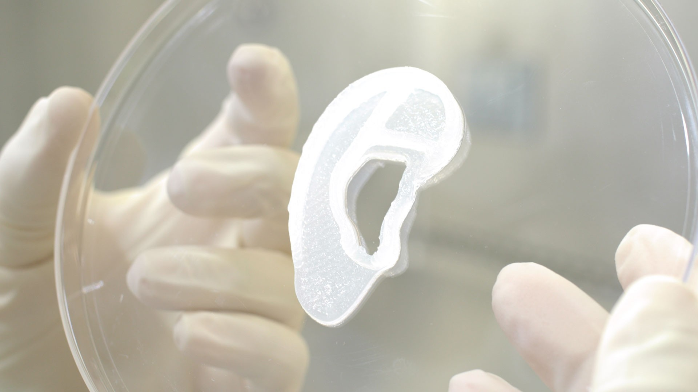

Técnicas para su fabricación

Existen muchas técnicas utilizadas en la fabricación de una oreja artifical para transplantes. Por ejemplo:
Fabricación de Órganos HumanosNatalia Macarlupú 2°C
|
Características del Órgano (Oreja) |
|
|
El órgano de la oreja, también llamado como pabellón auricular, es la parte externa visible del oído. A diferencia de otros órganos internos del cuerpo, como el corazón o los riñones, el trasplante de la oreja no es una practica comun en la medicina. Durante el trasplante, estos vasos sanguíneos del donante se conectarían con los del receptor para lograr una circulación sanguínea adecuada y prevenir la necrosis o rechazo del tejido trasplantado. En un trasplante de oreja, se buscaría una coincidencia de tejidos entre el donante y el receptor para que haya menos riesgo de rechazo. El trasplante de oreja implicaría trasplantar tanto el cartílago como la piel, por eso se debe tener cuidado en todas las características que podría requerir este tipo de operaciones. :) | |
Técnicas para su fabricación |
|
|
Existen muchas técnicas utilizadas en la fabricación de una oreja artifical para transplantes. Por ejemplo: |
Beneficios y propuestas de mejora |
|
|
Un transplante de oreja puede mejorar múltiples cosas, debido a la grandes oportunidades que puede crear. Por ejemplo, un transplante de oreja puede mejorar parcialmente la capacidad de audición (si la perdida auditiva está relacionada con la estructura de la oreja externa). Una oreja transplantada puede también puede mejorar la capacidad de captar la dirección y localización del sonido por lo que podría ayudar al paciente. También puede mejorar la confian za ya que al transplantar una oreja, de alguna manera se hace una restauración estética a la vez. :) | |
Opinión |
|
|
En mi opinión, yo creo que el transplante de oreja podría ser una gran oportunidad para bastantes personas que padecen alguna afección de esta parte del cuerpo. Este procedimiento ofrece bastantes beneficios por lo cual podría ser una gran opción para mucha gente. El transplante de oreja es algo que impulsa la investigación médica y la innovación en la parte de cirugías reconstructivas. Gracias a estas innovaciones, la medicina puede mejorar y se pueden hallar nuevas técnicas al respecto :D |